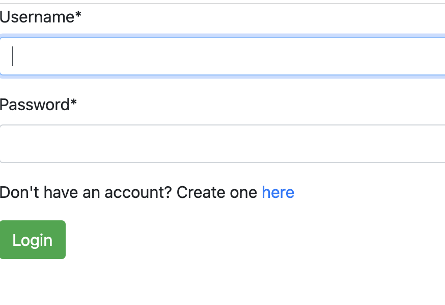
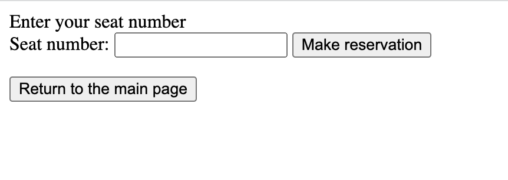
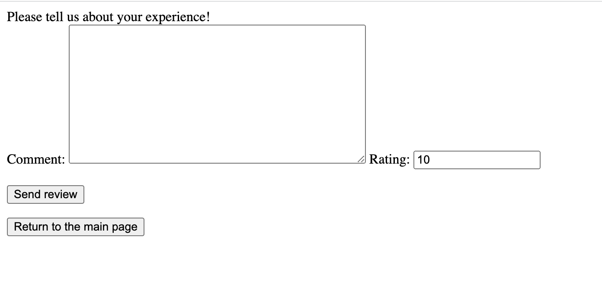

Создание форм для регистрации, бронирования и добавления комментариев
Форма для регистрации
class RegisterForm(UserCreationForm):
class Meta:
model = User
fields = ['username', 'first_name', 'last_name', 'email', 'password1', 'password2']
Представление для регистрации
def register(request):
if request.method == 'POST':
form = RegisterForm(request.POST)
if form.is_valid():
form.save()
return redirect('/airport')
else:
form = RegisterForm()
return render(request, 'registration/register.html', {'form': form})
HTML-код для отображения формы регистрации
{% extends 'base.html' %}
{% block title %}Register{% endblock %}
{% load crispy_forms_tags %}
{% block content %}
<div class="content-section">
<form method="POST" class="form-group">
{% csrf_token %}
<legend class="border-bottom mb-3">Create an Account</legend>
{{form|crispy}}
<button name="create" type="submit" class="btn btn-success">Register</button>
</form>
</div>
{% endblock %}

Форма бронирования выбранного места
class ReservationForm(forms.ModelForm):
class Meta:
model = Reservation
fields = ['seat_number']
Представление для бронирования
def make_reservation(request, flight_id, reservation_id=None):
if request.user.is_authenticated:
if request.method == 'POST':
flight = get_object_or_404(Flight, pk=flight_id)
if reservation_id is None:
form = ReservationForm(request.POST)
if form.is_valid():
new_res = form.save(commit=False)
new_res.flight = flight
new_res.passenger = request.user
new_res.save()
return redirect('/airport/list_reservations')
else:
reservation = get_object_or_404(Reservation, pk=reservation_id)
form = ReservationForm(request.POST, instance=reservation)
form.save()
return redirect('/airport/list_reservations')
else:
form = ReservationForm()
return render(request,
'make_reservation.html',
{'form': form, 'flight_id': flight_id, 'reservation_id': reservation_id})
else:
return HttpResponse('Please sign in to manage your reservations.')
HTML-код для отображения формы бронирования
{% block title %}Enter your seat number{% endblock %}
{% block content %}
<div class="content-section">
{% if reservation_id %}
<form method="POST" action="/airport/make_reservation/{{ flight_id }}/{{ reservation_id }}/">
{% csrf_token %}
{{ form }}
<button name="create" type="submit">Make reservation</button>
</form>
{% else %}
<form method="POST" action="/airport/make_reservation/{{ flight_id }}/">
{% csrf_token %}
{{ form }}
<button name="create" type="submit">Make reservation</button>
</form>
{% endif %}
</div>
{% endblock %}
<form action="http://127.0.0.1:8000/airport">
<input type="submit" value="Return to the main page" />
</form>

Форма для добавления комментариев С добаалением комментариев логика такая же, как и с бронированием, id пользователя и рейса мы уже имеем, следовательно, осталось добавить рейтинг и текст комментария
class ReviewForm(forms.ModelForm):
class Meta:
model = Review
fields = ['comment', 'rating']
Представление для комментариев
def make_review(request, flight_id):
if request.user.is_authenticated:
if request.method == 'POST':
flight = get_object_or_404(Flight, pk=flight_id)
form = ReviewForm(request.POST)
if form.is_valid():
new_res = form.save(commit=False)
new_res.flight = flight
new_res.passenger = request.user
new_res.save()
return redirect('/airport/list_reservations')
else:
form = ReviewForm()
return render(request, 'make_review.html', {'form': form, 'flight_id': flight_id})
else:
return HttpResponse('Please sign in to manage your reservations.')
HTML-код для отображения формы добавления комментариев
{% block title %}Please tell us about your experience!{% endblock %}
{% block content %}
<div class="content-section">
<form method="POST" action="/airport/make_review/{{ flight_id }}/">
{% csrf_token %}
{{ form }}
<br><br>
<button name="create" type="submit">Send review</button>
</form>
</div>
{% endblock %}
<form action="http://127.0.0.1:8000/airport">
<input type="submit" value="Return to the main page" />
</form>
